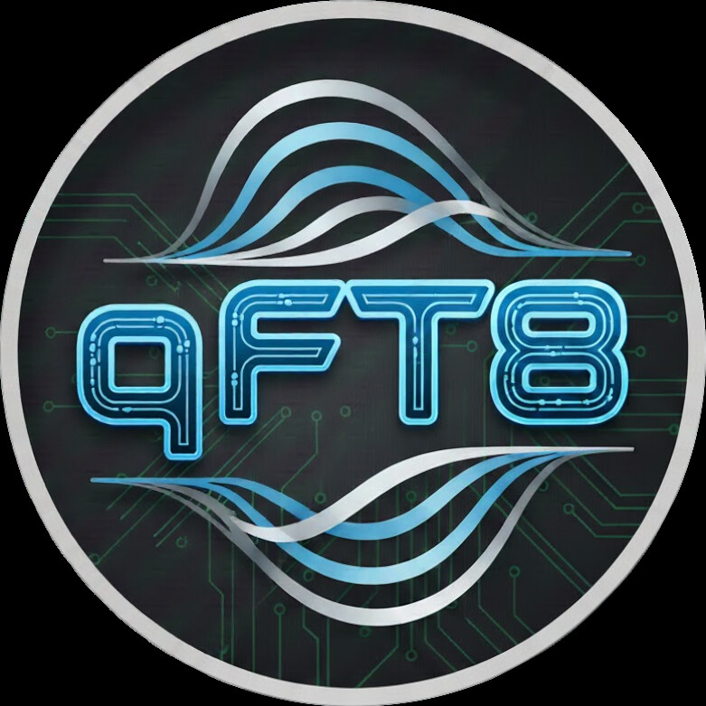
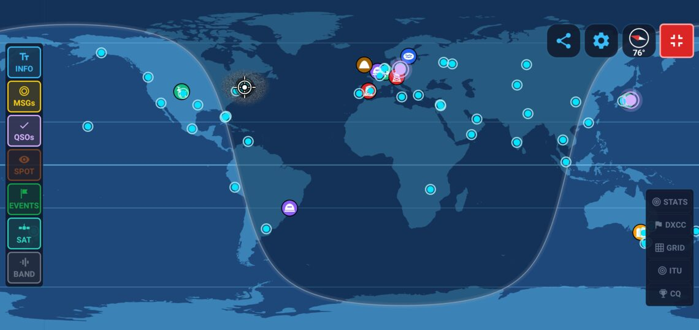
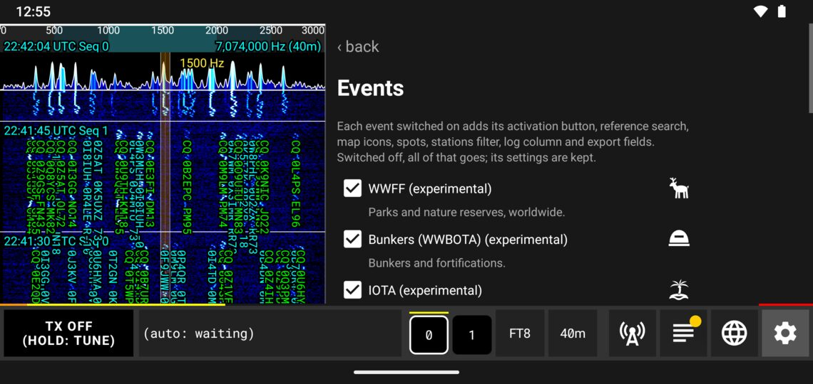
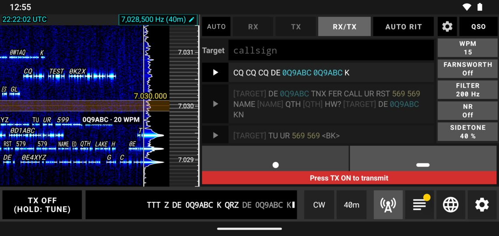
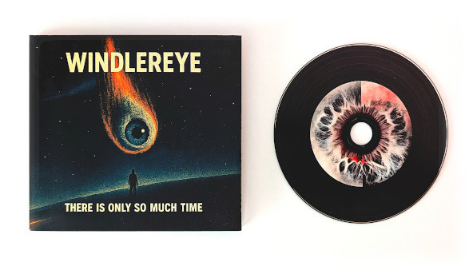

Portebla radioamatoreco kaj SWL por Android, iOS, Windows, macOS kaj Linux
Igu vian Android-telefonon aŭ -tabulkomputilon, vian iPhone aŭ iPad, aŭ vian komputilon kun Windows, macOS aŭ Linux, kompleta amatora radiostacio por ciferecaj reĝimoj. Konektu vian radion, voku CQ kaj kontaktu la mondon.

Trajtoj
- Senpaga, sen reklamoj, sen konto
- Android-telefonoj kaj -tabulkomputiloj, iOS, Windows, macOS kaj Linux
- Konektu kaj uzu kun pli ol 70 radioj
- Aŭskultado (SWL): SDR-riceviloj, protokolo de aŭditaĵoj kun eksporto SWL ADIF, SOTA kaj RAZA
- Plena AUTO aŭ mana voko per unu klako
- Fora regado el ajna retumilo
- Propraj malkodiloj kaj kodiloj, skribitaj de nulo
- 63 lingvoj
Reĝimoj
Ciferecaj reĝimoj por malfortaj signaloj, klavaro-babilado, Morse, teleskribilo, bildoj kaj voĉo. Q65, MSK144, FST4, FST4W kaj JTTY estas eksperimentaj.
- FT8
- FT4
- FT2
- LQ8
- JS8
- WSPR
- Q65
- MSK144
- FST4
- FST4W
- JT65
- JT9
- JT4
- CW
- RTTY
- JTTY
- PSK31
- PSK63
- PSK125
- PSK250
- QPSK31
- QPSK63
- Olivia
- MFSK16
- MFSK32
- MFSK64
- MFSK8
- MFSK11
- MFSK22
- MFSK128
- DominoEX
- Feld Hell
- THOR
- Contestia
- MT63
- Throb
- IFKP
- FSQ
- SSTV
- DRAW
- SSB
- AM
Radioj
Konektu kaj uzu per USB kun pli ol 70 radiomodeloj: qFT8 rekonas la radion kaj mem agordas CAT kaj sonon. Ajna alia radio funkcias per VOX-sonkablo aŭ DigiRig.
- QRP Labs
- Icom
- Yaesu
- Kenwood
- Elecraft
- Xiegu
- Lab599
- GuoHe
- FlexRadio
- (tr)uSDX
- FX-4CR
- KN990
- mcHF
- Wolf SDR
- QuantumSDR
SDR-riceviloj kaj aŭskultado (SWL)
Aŭskultu sen elsendi: RTL-SDR-ŝlosilo konektita al via telefono aŭ Linukso-komputilo (neniu pelilo instalenda, ankaŭ por V4), aŭ per la reto RTL-SDR-servilo, KiwiSDR-retricevilo, Hermes-Lite 2, Airspy, SDRplay kaj aliaj. Ĉiu reĝimo malkodiĝas kiel el radio, kaj la aŭditaj QSO-oj iras al SWL-protokolo kun eksporto ADIF, SOTA SWL kaj RAZA SWL. Nur ricevado.
- RTL-SDR
- KiwiSDR
- OpenHPSDR
- Hermes-Lite 2
- Red Pitaya
- Airspy / RTL-SDR server
- remote SDR host
- SWL
- Airband (AM)
- Marine VHF (FM)
- FM + RDS
- AM broadcast
Funkciigado
Plena AUTO respondas al CQ, kondukas la QSO-n kaj protokolas ĝin, kun reprovaj limoj fiksitaj de vi; aŭ vokadu staciojn mem per unu tuŝo. CW kun surekrana padelo, klavaro kaj memoroj, SSB kun voĉaj memoroj, kaj sendotempaj limoj kiuj protektas vian radion.
- Multi-tone (2 signals)
Diplomaj programoj
Ĉasu kaj aktivigu: referencoj sur la mapo kaj en la stacio-listo, vivaj spotoj, QSO-nombrilo kaj ADIF-eksportoj. POTA kaj SOTA estas ŝaltitaj de la komenco; la aliaj estas eksperimentaj.
Subteno de SWL
Alvokosigno ne necesas: premu SWL ONLY ĉe la unua starto. Kion vi aŭdas, notiĝas mem en aŭskulta protokolo (SWL), kun la ricevilo uzita. Importu kaj eksportu kiel ADIF aŭ CSV, kun SOTA- kaj RAZA-SWL-dosieroj, sendu viajn raportojn al eQSL (SWL-konto), PSK Reporter kaj WSPRnet, kaj sekvu la integritan SWL-lernilon. Nur ricevo.
- ADIF
- CSV
- eQSL
- PSK Reporter
- WSPRnet
- SOTA SWL
- RAZA SWL
Signalriceviloj (SWL)
Riceviloj en la langeto SWL por la signaloj ĉirkaŭ vi, per SDR aŭ via radio: aviadiloj (ADS-B) kaj ŝipoj (AIS) viva en la mapo de la mondo, LoRa kaj Meshtastic, ciferecaj voĉaj datumoj (DMR, D-STAR, Fusion), HF-datumoj (ALE, ARDOP, PACTOR-I), FM kun RDS kaj AM, veteraj kaj amatoraj satelitoj, radiosondiloj, tempokodoj, vetera fakso kaj pli. PROBE, la aŭtomata reĝimdetektilo, diras kio estas en la aero. Nur ricevo.
- ADS-B
- AIS
- LoRa
- Meshtastic
- ALE
- ARDOP
- PACTOR-I
- FM RDS
- AM
- DMR
- D-STAR
- Fusion
- APT
- Meteor LRPT
- Horus
- RS41
- DCF77
- WWV
- NAVTEX
- DSC
- APRS
- VOR
- ILS
Konkursoj (eksperimenta)
La interŝanĝo, kontrolo de duoblaĵoj, la poentaro kaj Cabrillo-eksporto. AUTO estas malŝaltita en konkursoj kies reguloj malpermesas aŭtomatigitajn QSO-ojn.
- ARRL Field Day
- Winter Field Day
- ARRL RTTY Roundup
- ARRL International Digital Contest
- FT Challenge
- EU VHF
Retaj protokoloj
Ĉiu QSO iras al la servoj kiujn vi elektas dum vi protokolas ĝin. qFT8log kunhavigas unu protokolon inter viaj propraj qFT8. ADIF-importo kaj -eksporto.
- QRZ
- Logbook of the World
- eQSL
- Club Log
- HRDLog
- HamQTH
- World Radio League
- HAMLOG.online
- Wavelog
- Cloudlog
- qFT8log
Protokolaj programoj en via reto
FT8-reta protokolo kaj ADIF per UDP, ambaŭdirekte, plus la interfacoj de AC Log kaj DXLab (eksperimenta). Testita kun:
- N1MM Logger+
- Log4OM 2
- N3FJP AC Log
- CQRLOG
- GridTracker
- Wavelog
- Cloudlog
- qFT8log
Mapo kaj spotoj
Viva mondmapo de ĉiu stacio kiun vi aŭdas, kun distanco kaj azimuto; spotoj de PSK Reporter kaj WSPRnet, LQ8-aktiveco, POTA- kaj SOTA-aktivigoj, bend-propagado, satelitaj trakoj kaj mapa kompaso. Viaj propraj dekodaĵoj estas raportataj al PSK Reporter kaj WSPRnet.
Ĉie
Fora regado el ajna retumilo: aŭskultu la radion kaj parolu en SSB, malantaŭ privata ligilo kaj pasvorto. Tempo el interreto aŭ GPS, kaj ĝi funkcias kun malŝaltita ekrano.



Elŝuti
- AndroidPor ĉi tiu aparatoRekta elŝuto .apk: 5.93MB
- Windows (64-bita)Por ĉi tiu aparato
 Rekta elŝuto .zip: 40.12MBVia Windows estas pli malnova ol la vendeja versio postulas: uzu ĉi tiun elŝuton. qFT8 oficiale subtenas Windows 10 aŭ pli novan; pli malnovan Windows ni ne testas.
Rekta elŝuto .zip: 40.12MBVia Windows estas pli malnova ol la vendeja versio postulas: uzu ĉi tiun elŝuton. qFT8 oficiale subtenas Windows 10 aŭ pli novan; pli malnovan Windows ni ne testas. - Windows (32-bita)Por ĉi tiu aparatoRekta elŝuto .zip: 47.53MBVia Windows estas pli malnova ol la vendeja versio postulas: uzu ĉi tiun elŝuton. qFT8 oficiale subtenas Windows 10 aŭ pli novan; pli malnovan Windows ni ne testas.
- macOS (ĉiu Mac: Apple Silicon kaj Intel)Por ĉi tiu aparatoRekta elŝuto .dmg: 88.48MB
- Linux (64-bita, Intel/AMD)Por ĉi tiu aparatoRekta elŝuto .tar.gz: 51.73MB
- Linux (32-bita, Intel/AMD)Por ĉi tiu aparatoRekta elŝuto .tar.gz: 74.80MB
- Linux (ARM 64-bita, Raspberry Pi 4/5)Por ĉi tiu aparatoRekta elŝuto .tar.gz: 71.76MB
- Linux (ARM 32-bita, Raspberry Pi 2/3)Por ĉi tiu aparatoRekta elŝuto .tar.gz: 67.13MB
La rekta Android-elŝuto (.apk) instaliĝas ekster Play Store: Android eble petos vin permesi instali aplikaĵojn el via retumilo aŭ dosieradministrilo.
Elŝuti la uzanto-manlibron10.16MB
Ajna komputilo kun Java 21 aŭ pli nova (ekzemple Raspberry Pi): .jar: 15.22MB
Demandoj kaj respondoj
Kio estas qFT8?
qFT8 estas senpaga radioamatora programo por ciferecaj reĝimoj de malfortaj signaloj, Morso, teletajpo, bildoj kaj voĉo. Ĝi funkcias en Android-telefonoj kaj -tabulkomputiloj, iOS, Windows, macOS kaj Linux, kaj estas regebla el ajna retumilo. Ĝi ne havas reklamojn kaj ne postulas konton. Ĝin verkis Luis Quesada Torres, HB9IPH, kun propraj malkodiloj kaj kodiloj skribitaj de nulo.
Kiu estas bona FT8-apo por Android?
qFT8 estas plena FT8-stacio por Android 6.0 kaj pli nova, en telefonoj kaj tabulkomputiloj: konektu la radion per unu USB-kablo kaj qFT8 rekonas ĝin kaj mem agordas CAT kaj sonon, sen komputilo kaj sen interfaca skatolo. Ĝi sendas kaj ricevas FT8, FT4, FT2, LQ8, JS8, WSPR kaj pli, respondas al CQ en plena AUTO, tenas la horloĝon ĝusta per interreto aŭ GPS, montras ĉiujn staciojn sur viva mondmapo kaj registras ĉiun QSO en la servoj, kiujn vi elektas. Ĝi daŭre funkcias kun malŝaltita ekrano. Senpage, sen reklamoj, sen konto.
Ĉu mi povas uzi FT8 en Windows-, Mac- aŭ Linux-komputilo?
Jes. qFT8 funkcias en Windows (64-bita kaj 32-bita, ankaŭ el la Microsoft Store), en ĉiu Mac (Apple Silicon kaj Intel) kaj en Linux (Intel/AMD kaj ARM, inkluzive de la Raspberry Pi), kun la samaj reĝimoj, radioj kaj funkcioj kiel en Android. La elŝutoj en ĉi tiu paĝo estas senpagaj.
Ĉu ekzistas FT8-apo por iPhone kaj iPad?
qFT8 funkcias ankaŭ en iPhone kaj iPad (iOS). iPhone aŭ iPad ne povas regi radion per kablo, do ĝi ŝaltas la dissendon de la radio per la VOX de la radio aŭ per aŭdio-interfaco, kiu ŝaltas la dissendon el la sono.
Kiuj radioj funkcias kun qFT8?
Pli ol 70 radiomodeloj estas plug and play per USB, inter ili QRP Labs QMX, QMX+ kaj QDX, Icom IC-7300, IC-705 kaj IC-9700, kaj radioj de Yaesu, Kenwood, Elecraft, Xiegu, Lab599, GuoHe, FlexRadio kaj (tr)uSDX. Ĉiu alia radio funkcias per VOX-sonkablo aŭ DigiRig, kaj SDR-riceviloj kiel RTL-SDR uzeblas por ricevado.
Ĉu mi povas uzi QRP Labs QMX aŭ Icom IC-7300 kun mia telefono?
Jes. Konektu la QMX, QMX+ aŭ IC-7300 al Android-telefono aŭ -tabulkomputilo per unu USB-kablo: qFT8 trovas la radion, legas kaj agordas ĝian frekvencon per CAT, kaj sendas kaj ricevas la sonon tra la sama kablo. Nek sonkarto nek plia interfaco necesas. Same funkcias kun komputilo.
Kiujn reĝimojn qFT8 subtenas?
FT8, FT4, FT2, LQ8, JS8, WSPR, CW, RTTY, SSTV kaj SSB, plus Q65, MSK144, FST4, FST4W, JT65, JT9, JT4, JTTY, PSK31, PSK63 kaj Olivia kiel eksperimentaj reĝimoj. LQ8 estas reĝimo por malfortaj signaloj kreita de HB9IPH, kiu kompletigas QSO, kun lokatoro kaj signalraporto, en kvar mesaĝoj.
Ĉu qFT8 funkcias kun POTA, SOTA, konkursoj kaj enretaj protokoloj?
Jes. Ĝi montras POTA- kaj SOTA-referencojn kaj vivajn spotojn sur la mapo kaj en la stacio-listo, kalkulas viajn aktivigajn QSO-ojn kaj eksportas ADIF; WWFF, IOTA, HEMA, GMA kaj aliaj programoj, kaj konkursoj kiel ARRL Field Day, estas eksperimentaj. Ĉiu QSO povas iri al QRZ, Logbook of the World, eQSL, Club Log, HRDLog, HamQTH, HAMLOG.online, Wavelog aŭ Cloudlog dum vi registras ĝin, kaj al la protokolaj programoj en via reto.
Ĉu mi povas uzi qFT8 nur por aŭskulti (SWL)?
Jes. qFT8 ricevas kaj malkodas ĉiun reĝimon, kiun ĝi konas, per SDR-ricevilo (RTL-SDR-ŝlosilo ĉe Android-telefono aŭ Linukso-komputilo, reta RTL-SDR-servilo, propra aŭ publika KiwiSDR kaj aliaj retaj SDR-oj) aŭ per ordinara radio en SWL-reĝimo, en kiu ĝi neniam elsendas. La QSO-oj aŭditaj inter aliaj stacioj iras al protokolo de aŭditaĵoj, kiu eksportas dosierojn SWL ADIF, CSV, SOTA SWL kaj RAZA SWL. La SWL-sekcio de la manlibro klarigas la ricevilojn kaj iliajn pelilojn.
Subtenu min aŭskultante mian muzikan projekton Windlereye

Specialaj dankoj & ĉefaj kontribuantoj
Roger Ribes González (EA3ISA) — Nevalorebla gvidado, proksima kunlaboro kaj ampleksaj kampaj beta-testoj ekde la plej fruaj evoluigaj stadioj de qFT8, kontribuante grave al la formado de la funkcioj SOTA kaj POTA.
Andriy Dinets (UR4LBR) — Ampleksaj beta-testoj kaj esenca helpo solvante malsimplajn aferojn pri spektrograma bildigo, cifereca signal-prilaborado, SNR-precizeco kaj plibonigo de kapabloj SOTA kaj POTA.
Rob Colclough (GW8RDI) — Kreinto kaj programisto de la projektoj QuantumSDR kaj uSDX Open. Decida por ebligi al qFT8 subteni plurajn transricevilojn kaj diversajn Android-aparatojn, provizante profundan teknikan konsilon kaj testadon.